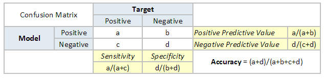
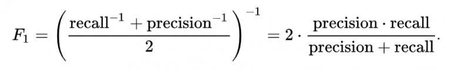
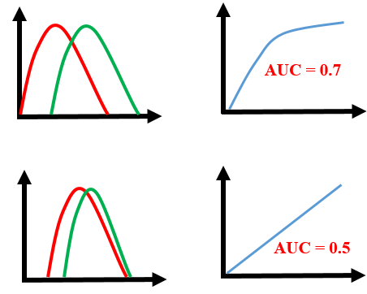
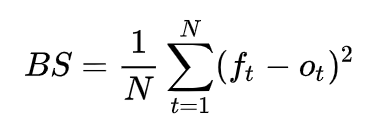
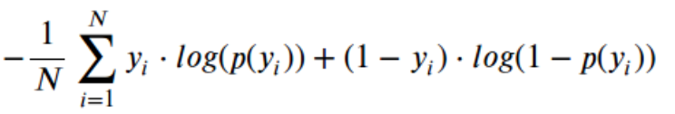

Let’s put a summary of the common Classification evaluation metrics. What they mean and how to use them.
Accuracy

Meaning:
Correct identifications / all examples
pros:
- easy to explain
cons:
- works poorly with unbalanced data
- cannot express uncertainty about a certain prediction
F1 score

Meaning:
a weighted average of the precision and recall
pros:
- can be used for multi-class/multi-label problems by choosing the average method
- micro: globally by counting total positives
- macro: calculate f1 for each label, then compute unweighted mean
- weighted: like macro, but weighted mean
cons:
Area Under the Receiver Operating Characteristic Curve (ROC AUC)

Meaning:
ROC (Receiver Operating Characteristic) Curve tells us about how good the model can distinguish between two things. Thus, AUC ROC indicates how well the probabilities from the positive classes are separated from the negative classes.
pros:
- independent of the response rate
cons:
- based on the ranking of probabilities, not the real probabilities values
- not be able to interpret your predictions as probabilities
- problematic especially the data is imbalanced (highly skewed).
- increasing of AUC doesn’t really reflect a better classifier. It’s just the side-effect of too many negative examples.
Brier Score

Meaning:
how close the prediction is to the real case. The lower the closer.
pros:
Log Loss

Meaning:
negative average of the log of corrected predicted probabilities for each instance. The lower the better, but no absolute values. score depends on case.